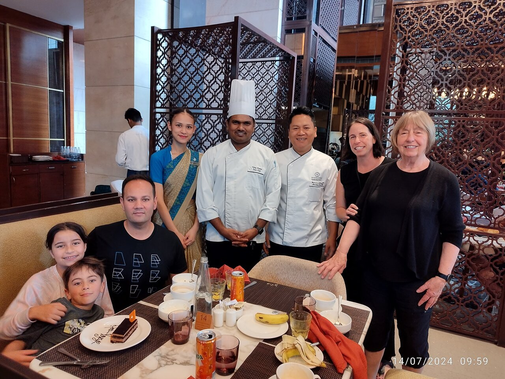
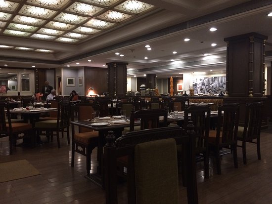

About Us:
Welcome to Delight Coffee Cafe, your premier destination for exceptional coffee and an inviting atmosphere. Nestled in the heart of Hyderabad, our cafe has been serving the community since [2000], blending tradition with innovation to create a unique coffee experience that delights the senses. At Delight Coffee Cafe, we believe that coffee is more than just a drink—it’s an experience. Our mission is to craft the perfect cup of coffee that not only satisfies but also invigorates. Each cup is a testament to our passion for excellence and our commitment to quality. We source our beans from the finest coffee-growing regions around the world, ensuring that every sip is rich, aromatic, and full of character. Our menu features a diverse selection of coffee beverages, from classic espresso and creamy lattes to adventurous specialty drinks. We take pride in our baristas’ expertise and their dedication to perfecting each brew. Whether you’re a traditionalist who prefers a classic cappuccino or a trendsetter eager to try our seasonal creations, you’ll find something to love. In addition to our exceptional coffee, Delight Coffee Cafe offers a range of freshly baked pastries, sandwiches, and salads. Our baked goods are crafted daily using the finest ingredients, ensuring that each item is as delicious as it is fresh. For those looking for a light lunch or a satisfying snack, our menu includes a variety of options to suit every palate. Our cafe’s ambiance is designed to be both cozy and stylish. With its warm, inviting decor, Delight Coffee Cafe is the perfect spot to unwind after a long day, catch up with friends, or simply enjoy a quiet moment with your favorite book. The interior features comfortable seating, soft lighting, and a welcoming atmosphere that encourages relaxation and conversation. We also believe in the importance of community and strive to be a hub where people come together. Our events calendar includes live music performances, poetry readings, and art exhibitions, all aimed at fostering a vibrant cultural scene. We are proud to support local artists and musicians, and our space is often a canvas for their creative expressions. At Delight Coffee Cafe, sustainability is at the core of our operations. We are committed to reducing our environmental impact through eco-friendly practices such as using recyclable materials, minimizing waste, and sourcing ethically produced coffee beans. Our goal is to create a positive impact on both our community and the planet. Customer satisfaction is our top priority. Our friendly and knowledgeable staff are always ready to assist with a smile, ensuring that every visit to Delight Coffee Cafe is a memorable one. Whether you’re here for a quick coffee run or a leisurely afternoon, we aim to provide exceptional service and a warm welcome. We invite you to explore our menu, experience our unique blend of coffee, and enjoy the ambiance that makes Delight Coffee Cafe a cherished part of the [City Name] community. Join us for a cup of coffee that’s crafted with care and served with a smile. Discover why Delight Coffee Cafe is not just a place to get your caffeine fix but a destination where you can savor life’s simple pleasures. Thank you for choosing Delight Coffee Cafe. We look forward to serving you soon and becoming a part of your daily coffee ritual.
Specials of the Week
Coffee
As long as there was coffee in the world, how bad could things can be change
Cappuccino
As long as there was coffee in the world, how bad could things can be change

Snacks
Take a Bit Before Having Delight